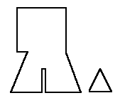

According to the typology given in Nockert, Type 3 Hoods are typified as
"Hood cut in two equal parts, with a seam above the skull. Liripipe cut separately. Short cape (10-15 cm long) with diagonally cut neck and gore inserted on each shoulder. Narrow Neck (43-47 cm). Liripipe length varies between 47 and 68 cm, width 2-6 cm."
This group is made up from eleven hoods from Herjolfsnes, and comprises Norlund's "Type II": no. 65, no. 71, no. 72, no. 73, no. 75, no. 76, no. 77, no. 78, no. 79, and no. 80. Cutting the hood as a piece with the liripipe would then include London Hood no.174.
Return to Contents
Some Clothing of the Middle Ages, by I. Marc Carlson, Copyright 1996 This code is given for the free exchange of information, provided the Author's Name is included in all future revisions, and no money change hands-